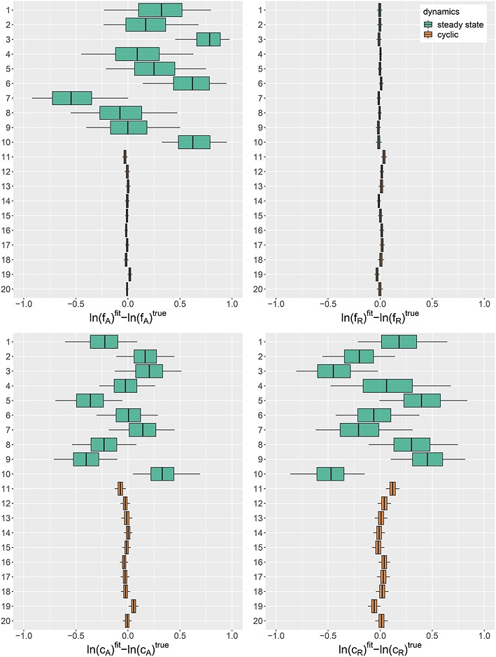
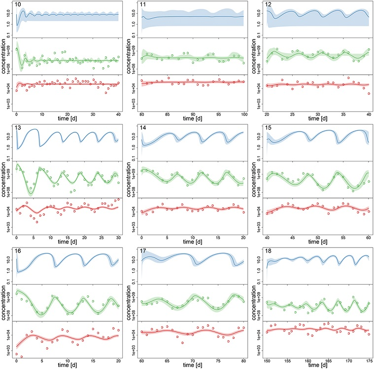
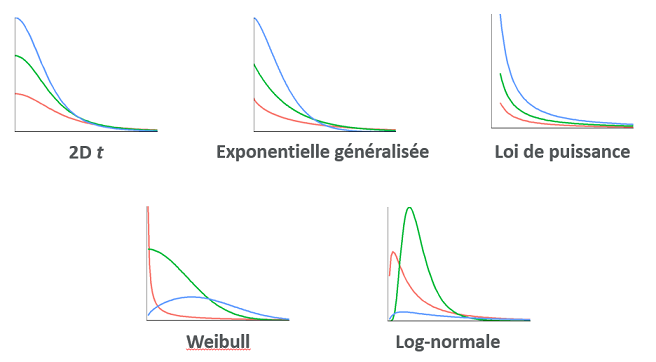
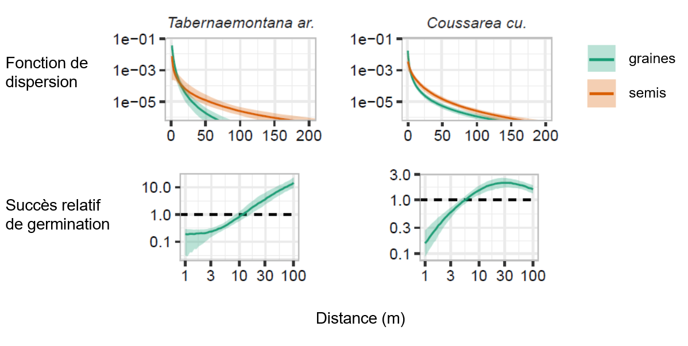

Modèles hiérarchiques bayésiens 2
Contenu du cours
Révision: Comparaison et sélection de modèles
Approche bayésienne pour la comparaison de modèles
Comparaison de modèles avec loo et brms
Plus d’exemples de modèles bayésiens en écologie
Comparaison et sélection de modèles
Supposons que nous avons différents modèles statistiques qui visent à expliquer les mêmes données. Les modèles pourraient inclure différents prédicteurs, une distribution différente de la réponse, etc. Comment déterminer quel modèle représente le mieux le phénomène étudié?
La plupart des méthodes de comparaison de modèles cherchent à optimiser la capacité du modèle à prédire de nouvelles observations du phénomène. Autrement dit, il ne suffit pas d’évaluer si le modèle s’approche des données utilisées pour son ajustement. Un modèle plus complexe, avec davantage de paramètres ajustables, va toujours être plus près de ces données.
De façon générale, un modèle trop simple comporte une grande erreur systématique (biais ou sous-ajustement), car il omet des effets importants sur la variable réponse; un modèle trop complexe comporte une grande erreur aléatoire (variance ou surajustement), car il tend à représenter des associations “accidentelles” d’un échantillon particulier qui ne se généralisent pas à la population. Le compromis idéal entre ces deux types d’erreur, qui minimise l’erreur totale, dépend de la quantité de données, car un grand échantillon diminue la variance associée à l’estimation de nombreux paramètres dans un modèle complexe.

Avec des grands jeux de données, il est possible de mettre de côté une partie des données (souvent ~20 à 30%) pour créer un ensemble de validation, tandis que le reste des données forment l’ensemble d’entraînement (training set). Dans ce cas, chacun des modèles candidats est ajusté à partir des données d’entraînement et la performance prédictive des modèles ajustés est évaluée sur l’ensemble de validation.
Validation croisée
La mise de côté d’une partie des données pour la validation n’est pas pratique si la taille de l’échantillon est modeste. Avec relativement peu de données, chaque point est important pour estimer précisément les paramètres du modèle; aussi, plus l’ensemble de validation est petit, plus il a des chances d’être non-représentatif de la population.
La validation croisée (cross-validation) offre une façon d’évaluer la performance prédictive sur des nouvelles observations sans avoir à mettre de côté un ensemble de validation. Cette méthode consiste à diviser aléatoirement les observations en groupes et mesurer la qualité de la prédiction des observations d’un groupe selon un modèle ajusté au reste des observations.
Par exemple, si chaque groupe ne comporte qu’une seule observation (leave-one-out cross-validation), nous pouvons évaluer la prédiction de chaque valeur de la réponse \(y_i\) pour un modèle ajusté sans l’observation \(i\). Cependant, cette méthode requiert de réajuster le modèle \(n\) fois, où \(n\) est le nombre d’observations.
Si le nombre d’observations est grand, il peut être plus pratique de diviser les observations en \(k\) groupes (k-fold cross-validation), par exemple \(k\) = 10, et d’ajuster chaque modèle à évaluer \(k\) fois en laissant une fraction \(1/k\) des observations de côté.
Critère d’information d’Akaike
Puisque les méthodes de validation croisée sont coûteuses en terme de calcul, il est utile de pouvoir approximer l’erreur de prédiction qui serait obtenue en validation croisée sans avoir à réajuster le modèle plusieurs fois.
Pour les modèles ajustés par la méthode du maximum de vraisemblance, le critère d’information d’Akaike (AIC) offre une mesure d’ajustement basée sur la théorie de l’information, qui tend à produire le même résultat que la validation croisée leave-one-out si la taille de l’échantillon est assez grand. L’AIC est calculé ainsi:
\[ AIC = -2 \log L + 2 K \]
où \(L\) est la fonction de vraisemblance à son maximum et \(K\) est le nombre de paramètres estimés par le modèle. Une petite valeur de l’AIC représente un meilleur pouvoir prédictif du modèle. Le premier terme de l’équation représente l’ajustement aux données observées, tandis que le deuxième terme pénalise les modèles plus complexes.
L’AIC est défini à une constante additive près, donc sa valeur absolue ne donne aucune information. C’est plutôt la différence d’AIC entre les modèles candidats qui est interprétable. Cette différence est définie par rapport à la valeur minimale de l’AIC parmi les modèles comparés: \(\Delta AIC = AIC - \min AIC\). Le meilleur modèle a un \(\Delta AIC = 0\).
L’expression:
\[ e^{-\frac{\Delta AIC}{2} } \]
correspond au rapport de la plausibilité (evidence ratio) de chaque modèle vs. celui ayant l’AIC minimal. Par exemple, \(\Delta AIC = 2\) correspond à un ratio de ~0.37 (~3 fois moins probable), tandis que \(\Delta AIC = 10\) correspond à un ratio de ~0.0067 (~150 fois moins probable).
Prédictions multi-modèles
Avec \(m\) modèles candidats, on peut se servir des rapports de plausibilité décrits ci-dessus pour définir le poids d’Akaike \(w\) pour chaque modèle:
\[w_i = \frac{e^{\frac{-\Delta AIC_i}{2}}}{\sum_{j=1}^{m} e^{\frac{-\Delta AIC_j}{2}}}\]
Le dénominateur normalise chaque rapport par leur somme, de façon à ce que la somme des poids \(w_i\) égale 1.
Si plusieurs modèles sont plausibles et ont un poids d’Akaike non-négligeable, alors il est possible de faire la moyenne de leurs prédictions d’une nouvelle observation de la réponse (cette prédiction est notée \(\tilde{y}\)), en pondérant la prédiction \(\tilde{y_j}\) de chaque modèle candidat par son poids \(w_j\).
\[\tilde{y} = \sum_{j = 1}^m w_j \tilde{y_j}\]
Les prédictions multi-modèles sont souvent plus précises que celles obtenues en considérant seulement le meilleur modèle, car elles tiennent compte de l’incertitude sur la forme du modèle.
Approche bayésienne pour la comparaison de modèles
Densité prédictive
Pour un modèle estimé par maximum de vraisemblance, les prédictions de nouvelles observations sont obtenues en fixant les paramètres du modèles à leur valeur estimée. La vraisemblance de cette nouvelle observation est donc \(p(\tilde{y} | \hat{\theta})\), où \(\hat{\theta}\) sont les estimés des paramètres au maximum de vraisemblance.
Dans une approche bayésienne, les prédictions de nouvelles observations sont obtenues en faisant la moyenne des prédictions en fonction de la distribution a posteriori de la valeur des paramètres. La densité prédictive de \(\tilde{y}\) en fonction du modèle ajusté aux observations \(y\), notée \(p(\tilde{y} | y)\), est égale à la moyenne de la vraisemblance \(p(\tilde{y} | \theta)\) pour la distribution a posteriori conjointe des \(\theta\):
\(p(\tilde{y} | y) = \int p(\tilde{y} | \theta) p(\theta | y) \text{d}\theta\) .
En pratique, si un algorithme de Monte-Carlo génère \(S\) vecteurs de paramètres \(\theta_{(1)}, ..., \theta_{(S)}\) approximant la distribution a posteriori, nous calculons \(p(\tilde{y} | y)\) par la moyenne des prédictions de chaque vecteur:
\(p(\tilde{y} | y) = \frac{1}{S} \sum_{j = 1}^S p(\tilde{y} | \theta_{(j)})\) .
Comme pour la vraisemblance, il est plus facile de travailler avec le logarithme de la densité prédictive.
Validation croisée
Pour déterminer le modèle qui maximise la densité prédictive de nouvelles observations, telle que définie ci-dessus, nous pouvons utiliser la validation croisée. Cependant, puisque l’ajustement des modèles hiérarchiques bayésiens demande parfois considérablement de temps de calcul, il n’est pas pratique dans ces cas de répéter l’estimation du modèle un grand nombre de fois, en laissant de côté une partie des données. Nous utilisons donc le plus souvent des critères qui approximent la performance prédictive d’une validation croisée.
Si l’AIC approxime bien l’erreur de validation croisée pour les modèles ajustés par maximum de vraisemblance avec un nombre d’observations assez grand, ce critère s’applique mal aux modèles bayésiens. D’une part, le maximum de vraisemblance n’est pas directement produit par l’ajustement du modèle bayésien. De plus, il est difficile de définir un nombre de paramètres ajustables \(K\) en raison de la structure hiérarchique et des contraintes imposées par les distributions a priori des paramètres, qui font que ces paramètres ne varient pas librement.
Critères de sélection pour les modèles hiérarchiques bayésiens
DIC
Le critère d’information de la déviance (DIC), basé sur l’AIC, a été l’un des premiers critères développés pour la comparaison de modèles bayésiens:
\[DIC = -2 \log p(y | \bar{\theta}) + 2 p_D\]
où \(\bar{\theta}\) est la moyenne de la distribution a posteriori de \(\theta\) et \(p_D\) est le nombre effectif de paramètres, qui peut être calculé de plusieurs façons.
Comme l’AIC, le DIC représente bien la performance prédictive relative de modèles sur de nouvelles données, si la taille de l’échantillon est assez grand. Cependant, il ne s’agit pas d’une prédiction bayésienne car elle se base sur un estimé unique de chaque paramètre (sa valeur moyenne) plutôt que sur la distribution a posteriori au complet.
WAIC
Le critère de Watanabe-Akaike (WAIC) est semblable au DIC, mais le premier terme est basé sur la densité prédictive conjointe des observations \(y_1, ..., y_n\).
\[WAIC = -2 \sum_{i=1}^n \log \left( \frac{1}{S} \sum_{j = 1}^S p(y_i | \theta_{(j)}) \right) + 2 p_W\] ,
où la pénalité \(p_W\) est la somme des variances du logarithme de la densité prédictive à chaque point:
\[p_W = \sum_{i=1}^n \text{Var}_j \left(\log p(y_i | \theta_{(j)}) \right)\]
Ici, Var\(_j\) désigne la variance de l’expression entre parenthèses sur l’ensemble des itérations \(j\).
Le WAIC d’un modèle brms peut être calculé avec la fonction waic.
PSIS-LOO
Une méthode développée récemment par Vehtari et al. (2017) consiste à estimer la densité prédictive à chaque point qui serait obtenue par validation croisée leave-one-out, c’est-à-dire en prédisant \(y_i\) à partir du modèle ajusté aux données excluant \(i\), \(y_{-i}\).
\(p(y_i | y_{-i}) = \int p(y_i | \theta) p(\theta | y_{-i}) \text{d}\theta\) .
La méthode PSIS-LOO (PSIS = Patero smoothed importance sampling, LOO = leave-one-out) vise à estimer cette quantité sans effectuer la validation croisée. En bref, cette approximation est obtenue en faisant la moyenne des \(p(y | \theta_{(j)})\), mais avec une pondération particulière des \(\theta_{(j)}\) (échantillonnage préférentiel). Cette pondération est ensuite ajustée pour que les poids extrêmes suivent un modèle théorique (distribution de Pareto).
Cette méthode est implémentée dans le package R loo et peut être appelée à partir de la fonction loo appliquée au résultat d’un modèle dans brms.
Comme nous verrons dans l’exemple plus loin, la méthode PSIS-LOO produit son propre diagnostic. L’ajustement des poids pour chaque valeur \(y_i\) est basé sur un paramètre de la distribution de Pareto \(k\) et lorsque \(k > 0.7\), l’approximation de \(p(y_i | y_{-i})\) est potentiellement instable. Si ce problème se produit pour quelques observations, il est possible de réajuster le modèle en excluant ces observations seulement afin de calculer directement \(p(y_i | y_{-i})\).
Le résultat de cette méthode est l’estimé du logarithme de la densité prédictive \(elpd_{loo}\), autrement dit la somme de \(\log p(y_i | y_{-i})\). Un critère d’information (LOOIC) semblable au DIC et WAIC peut être obtenu en multipliant \(elpd_{loo}\) par -2.
Comparaison des méthodes
La méthode PSIS-LOO est un peu plus précise que le WAIC, surtout pour les petits échantillons, mais le WAIC est généralement plus rapide à calculer.
Puisqu’elles sont basés sur la densité prédictive bayésienne plutôt que sur un seul estimé moyen de chaque paramètre, ces deux méthodes (WAIC et PSIS-LOO) sont actuellement préférées au DIC. Cependant, les deux supposent que les observations individuelles \(y_i\) soient indépendantes les unes des autres, conditionnellement à la valeur des paramètres. Typiquement, cette supposition n’est pas respectée si le modèle inclut directement une corrélation entre différentes valeurs de la réponse (ex.: corrélation temporelle ou spatiale).
Prédictions multi-modèles
Dans la section précédente, nous avons vu qu’une prédiction multi-modèles pour une nouvelle observation \(\tilde{y}\) est calculée par la moyenne pondérée des prédictions des différents modèles.
\[\tilde{y} = \sum_{j = 1}^m w_j \tilde{y_j}\]
Comme pour l’AIC, nous pouvons définir des poids selon les différences d’IC entre deux modèles et cela pour différents critères bayésiens (ex.: WAIC, LOOIC).
Cependant, il n’est pas toujours optimal de combiner les modèles proportionnellement à leur plausibilité. Par exemple, les deux meilleurs modèles peuvent produire des prédictions redondantes, tandis que le troisième et quatrième meilleur modèle peuvent aider à corriger certaines prédictions moins bonnes du meilleur modèle.
La superposition de modèles (model stacking) consiste à chercher les poids \(w_j\) qui minimisent l’erreur de prédiction multi-modèles donnée par la moyenne pondérée (Yao et al. 2018). Ce calcul peut être fait directement à partir des résultats de la méthode PSIS-LOO, comme nous verrons dans l’exemple de la prochaine section.
Comparaison de modèles avec loo et brms
Le jeu de données rikz.csv contient des données sur la richesse de la microfaune benthique (Richness) pour 45 sites répartis sur 5 plages (Beach) aux Pays-Bas, en fonction de la position verticale du site (NAP) et d’un indice d’exposition mesuré au niveau de la plage (Exposure).
rikz <- read.csv("../donnees/rikz.csv")
rikz$Exposure <- as.factor(rikz$Exposure)
head(rikz)## Sample Richness Exposure NAP Beach
## 1 1 11 10 0.045 1
## 2 2 10 10 -1.036 1
## 3 3 13 10 -1.336 1
## 4 4 11 10 0.616 1
## 5 5 10 10 -0.684 1
## 6 6 8 8 1.190 2La semaine dernière, nous avions ajusté avec brms un modèle de régression de Poisson pour la richesse spécifique en fonction de NAP et Exposure, avec un effet aléatoire de la plage sur l’ordonnée à l’origine.
library(brms)
rikz_prior <- c(set_prior("normal(0, 1)", class = "b"),
set_prior("normal(2, 1)", class = "Intercept"),
set_prior("normal(0, 0.5)", class = "sd"))
mod1 <- brm(Richness ~ NAP + Exposure + (1 | Beach), data = rikz,
family = poisson, prior = rikz_prior,
control = list(adapt_delta = 0.99))Nous considérons maintenant une autre version du modèle où l’effet du NAP varie aussi aléatoirement d’une plage à l’autre.
mod2 <- brm(Richness ~ NAP + Exposure + (1 + NAP | Beach), data = rikz,
family = poisson, prior = rikz_prior,
control = list(adapt_delta = 0.99))Voici les effets fixes et l’écart-type des effets aléatoires estimés pour les deux modèles. Dans le modèle 2, l’incertitude sur b_NAP a augmenté et l’effet aléatoire de la plage sur ce coefficient a un écart-type de 0.34 avec un intervalle de crédibilité de 0.06 à 0.70, comparable à l’effet aléatoire de la plage sur l’ordonnée à l’origine.
posterior_summary(mod1, pars = "b|sd")## Estimate Est.Error Q2.5 Q97.5
## b_Intercept 2.3768063 0.29928962 1.65052195 2.9026726
## b_NAP -0.5022979 0.07147339 -0.64245708 -0.3635854
## b_Exposure10 -0.4591405 0.32879974 -1.04058741 0.2932071
## b_Exposure11 -1.1593086 0.34394732 -1.76553502 -0.3930065
## sd_Beach__Intercept 0.2474170 0.13614456 0.02605894 0.5622590posterior_summary(mod2, pars = "b|sd")## Estimate Est.Error Q2.5 Q97.5
## b_Intercept 2.3730140 0.3342694 1.59135757 2.9490364
## b_NAP -0.5770183 0.1542767 -0.89430239 -0.2779925
## b_Exposure10 -0.3921654 0.3734278 -1.07957393 0.3969519
## b_Exposure11 -1.1529676 0.3797490 -1.81743688 -0.2800094
## sd_Beach__Intercept 0.3036332 0.1558014 0.03965657 0.6790722
## sd_Beach__NAP 0.3494459 0.1563327 0.07779468 0.7054053Calcul du LOOIC
La fonction loo de brms compare différents modèles en fonction du critère estimé avec PSIS-LOO (LOOIC, égal à -2 fois la densité prédictive estimée pour la validtion croisée).
loo1 <- loo(mod1, mod2, compare = TRUE)## Warning: Found 1 observations with a pareto_k > 0.7 in model 'mod1'. It is
## recommended to set 'moment_match = TRUE' in order to perform moment matching for
## problematic observations.## Warning: Found 3 observations with a pareto_k > 0.7 in model 'mod2'. It is
## recommended to set 'moment_match = TRUE' in order to perform moment matching for
## problematic observations.loo1## Output of model 'mod1':
##
## Computed from 4000 by 45 log-likelihood matrix
##
## Estimate SE
## elpd_loo -105.6 9.5
## p_loo 10.2 3.5
## looic 211.1 19.0
## ------
## Monte Carlo SE of elpd_loo is NA.
##
## Pareto k diagnostic values:
## Count Pct. Min. n_eff
## (-Inf, 0.5] (good) 42 93.3% 917
## (0.5, 0.7] (ok) 2 4.4% 127
## (0.7, 1] (bad) 1 2.2% 157
## (1, Inf) (very bad) 0 0.0% <NA>
## See help('pareto-k-diagnostic') for details.
##
## Output of model 'mod2':
##
## Computed from 4000 by 45 log-likelihood matrix
##
## Estimate SE
## elpd_loo -101.9 7.2
## p_loo 13.5 3.7
## looic 203.9 14.5
## ------
## Monte Carlo SE of elpd_loo is NA.
##
## Pareto k diagnostic values:
## Count Pct. Min. n_eff
## (-Inf, 0.5] (good) 33 73.3% 796
## (0.5, 0.7] (ok) 9 20.0% 255
## (0.7, 1] (bad) 3 6.7% 37
## (1, Inf) (very bad) 0 0.0% <NA>
## See help('pareto-k-diagnostic') for details.
##
## Model comparisons:
## elpd_diff se_diff
## mod2 0.0 0.0
## mod1 -3.6 3.4Le résultat indique que le modèle 1 a un log de la densité prédictive inférieur de 3.6 comparé au modèle 2, sauf que l’erreur-type de cette différence (2e colonne) est de 3.4. Donc il n’est peut-être pas certain que le modèle 2 soit le meilleur.
De plus, R nous avertit que pour 4 observations (1 du modèle 1, 3 du modèle 2), l’estimé PSIS-LOO est instable avec un \(k > 0.7\) dans la distribution de Pareto. Cet avertissement signifie que pour ces observations, les poids utilisés pour l’approximation de la densité prédictive de validation croisée ont trop de valeurs extrêmes pour estimer leur variance. Tel que suggéré par le message, nous ré-évaluons le LOOIC avec l’argument reloo = TRUE, qui va réajuster le modèle en omettant chacune des observations problématiques, pour calculer la densité prédictive de validation croisée directement.
loo_corr <- loo(mod1, mod2, compare = TRUE, reloo = TRUE)## 1 problematic observation(s) found.
## The model will be refit 1 times.##
## Fitting model 1 out of 1 (leaving out observation 10)## Start sampling## 3 problematic observation(s) found.
## The model will be refit 3 times.##
## Fitting model 1 out of 3 (leaving out observation 10)##
## Fitting model 2 out of 3 (leaving out observation 22)##
## Fitting model 3 out of 3 (leaving out observation 38)## Start sampling
## Start sampling
## Start samplingloo_corr## Output of model 'mod1':
##
## Computed from 4000 by 45 log-likelihood matrix
##
## Estimate SE
## elpd_loo -105.8 9.5
## p_loo 10.5 3.6
## looic 211.6 19.1
## ------
## Monte Carlo SE of elpd_loo is 0.1.
##
## Pareto k diagnostic values:
## Count Pct. Min. n_eff
## (-Inf, 0.5] (good) 43 95.6% 157
## (0.5, 0.7] (ok) 2 4.4% 127
## (0.7, 1] (bad) 0 0.0% <NA>
## (1, Inf) (very bad) 0 0.0% <NA>
##
## All Pareto k estimates are ok (k < 0.7).
## See help('pareto-k-diagnostic') for details.
##
## Output of model 'mod2':
##
## Computed from 4000 by 45 log-likelihood matrix
##
## Estimate SE
## elpd_loo -103.1 7.7
## p_loo 14.7 4.3
## looic 206.3 15.5
## ------
## Monte Carlo SE of elpd_loo is 0.3.
##
## Pareto k diagnostic values:
## Count Pct. Min. n_eff
## (-Inf, 0.5] (good) 36 80.0% 37
## (0.5, 0.7] (ok) 9 20.0% 255
## (0.7, 1] (bad) 0 0.0% <NA>
## (1, Inf) (very bad) 0 0.0% <NA>
##
## All Pareto k estimates are ok (k < 0.7).
## See help('pareto-k-diagnostic') for details.
##
## Model comparisons:
## elpd_diff se_diff
## mod2 0.0 0.0
## mod1 -2.7 3.0Ici, la valeur des LOOIC a un peu changé par rapport au cas précédent. À titre de comparaison, le WAIC produit une différence plus grande entre les deux modèles.
waic(mod1, mod2, compare = TRUE)## Warning:
## 6 (13.3%) p_waic estimates greater than 0.4. We recommend trying loo instead.## Warning:
## 9 (20.0%) p_waic estimates greater than 0.4. We recommend trying loo instead.## Output of model 'mod1':
##
## Computed from 4000 by 45 log-likelihood matrix
##
## Estimate SE
## elpd_waic -105.2 9.5
## p_waic 9.9 3.6
## waic 210.5 19.0
##
## 6 (13.3%) p_waic estimates greater than 0.4. We recommend trying loo instead.
##
## Output of model 'mod2':
##
## Computed from 4000 by 45 log-likelihood matrix
##
## Estimate SE
## elpd_waic -100.5 6.9
## p_waic 12.0 3.3
## waic 201.0 13.9
##
## 9 (20.0%) p_waic estimates greater than 0.4. We recommend trying loo instead.
##
## Model comparisons:
## elpd_diff se_diff
## mod2 0.0 0.0
## mod1 -4.7 3.6Comparaison avec le GLMM
Lorsque nous avions ajusté ces modèles avec des GLMM au cours 5, l’AIC était plus faible pour le modèle 1, avec un effet aléatoire sur l’ordonnée à l’origine seulement. Pourquoi la méthode bayésienne donne-t-elle un résultat différent?
D’abord, l’utilisation de distributions a priori contraint les valeurs des paramètres de façon à ce qu’un modèle plus complexe présente un surajustement moindre.
Ensuite, l’AIC et les critères bayésiens sont basés sur des prédictions différentes. Supposons que deux modèles diffèrent par un paramètre \(\theta\). L’AIC compare les prédictions lorsque ce paramètre est omis, ce qui implique par exemple \(\theta = 0\), avec les prédictions à la valeur estimée du maximum de vraisemblance \(\hat{\theta}\). En contrepartie, les prédictions bayésiennes du modèle incluant \(\theta\) sont une moyenne réalisée à partir de la distribution a posteriori de \(\theta\), qui va inclure des valeurs proches de 0 si ce cas a une probabilité a posteriori non-négligeable.
Pour ces deux raisons, les prédictions du maximum de vraisemblance et de l’approche bayésienne diffèrent sauf dans des cas très particuliers, ex.: un modèle linéaire où la distribution a priori a peu d’importance et la distribution a posteriori de tous les paramètres est symétrique.
Superposition des modèles
Le résultat de loo contient un élément pour chacun des modèles comparés. Chacun de ces éléments contient une matrice pointwise qui présente notamment la valeur estimée du log de la densité prédictive \(\log p(y_i | y_{-i})\) pour chaque point \(i\) (elpd_loo) et l’erreur-type de cet estimé (mcse_elpd_loo).
head(loo1$loos$mod1$pointwise)## elpd_loo mcse_elpd_loo p_loo looic influence_pareto_k
## [1,] -3.035422 0.010108673 0.21491808 6.070843 0.2736016
## [2,] -2.631103 0.009949967 0.17020507 5.262206 0.3098142
## [3,] -2.552925 0.008736143 0.12135383 5.105851 0.2586973
## [4,] -4.569708 0.021133985 0.65050744 9.139416 0.3687250
## [5,] -2.204221 0.003305800 0.02572645 4.408443 0.3002091
## [6,] -2.226006 0.005473939 0.06371198 4.452012 0.2461702Si nous voulions faire combiner les prédictions de ces deux modèles, la fonction stacking_weights du package loo permet de déterminer les poids pour la superposition optimale des deux modèles. Cette fonction requière une matrice avec une colonne par modèle, correspondant à la colonne elpd_loo de la matrice pointwise mentionnée ci-dessus.
library(loo)
stacking_weights(cbind(loo1$loos$mod1$pointwise[,1], loo1$loos$mod2$pointwise[,1]))## Method: stacking
## ------
## weight
## model1 0.037
## model2 0.963stacking_weights(cbind(loo_corr$loos$mod1$pointwise[,1], loo_corr$loos$mod2$pointwise[,1]))## Method: stacking
## ------
## weight
## model1 0.127
## model2 0.873Pour l’estimé du PSIS-LOO avec correction des valeurs problématiques, nous voyons qu’un poids beaucoup plus grand est donné au modèle 2. Tel que mentionné plus haut, puisque les prédictions du modèle 2 sont basées sur la distribution a posteriori entière de sd_Beach__NAP, cela inclut des cas où l’écart-type de cet effet aléatoire s’approche de 0 et on s’approche donc du modèle 1.
Nous terminons ce cours en présentant des exemples récents d’application des modèles hiérarchiques bayésiens avec Stan en écologie.
Application: modèle prédateur-proie
Rosenbaum et al. (2019) modélisent la dynamique de population d’un système prédateur-proie-ressource dans un environnement contrôlé (chemostat). Le prédateur est une espèce de rotifère (animal microscopique) et la proie est une algue unicellulaire dont la croissance dépend de la concentration d’azote (ressource limitante).
Modèle théorique
Les auteurs supposent que la concentration d’azote \(S\), la densité des algues \(A\) et celle des rotifères \(R\) varient au cours du temps selon les équations suivantes:
\[\frac{dS}{dt} = \delta S^* - \frac{1}{c_A} \frac{f_A S}{h_A + S} A - \delta S\]
Cette équation indique que le taux de variation de la concentration d’azote dépend de (1) l’influx d’azote \(\delta S^*\) (\(\delta\) est le débit du chemostat et \(S^*\) la concentration dans la solution entrante); (2) la consommation d’azote par les algues (\(c_A\) est le facteur de conversion, \(f_A\) est le taux de croissance maximal et \(h_A\) le point de demi-saturation) et (3) le flux de sortie \(\delta S\).
\[\frac{dA}{dt} = \frac{f_A S}{h_A + S} A - \frac{1}{c_R} \frac{f_R A}{h_R + A} R - \delta A\]
Cette équation indique que le taux de variation de la densité d’algues dépend de (1) la consommation d’azote par les algues, (2) la consommation d’algues par les rotifères (facteur de conversion \(c_R\), taux de croissance maximal \(f_R\) et point de demi-saturation \(h_R\)) et (3) le flux de sortie \(\delta A\).
\[\frac{dR}{dt} = \frac{f_R A}{h_R + A} R - \delta R\]
Finalement, le taux de variation de la densité de rotifères dépend de leur consommation d’algues et du flux de sortie.
Données et modèle statistique
Les auteurs ont mesuré la concentration quotidienne d’algues et de rotifères pour une vingtaine de jours dans 18 réplicats de cette expérience. Dans certains réplicats, les séries temporelles montraient des concentrations stables, tandis que d’autres montraient une dynamique cyclique.
Pour cette expérience, les paramètres \(\delta\), \(S^*\), \(h_A\) et \(h_R\) sont connus, tandis que les taux de croissance maximaux des deux organismes (\(f_A\) et \(f_R\)) et les facteurs de conversion (\(c_A\) et \(c_R\)) doivent être estimés à partir des données. Voici un résumé du modèle Stan implémentant ce modèle:
Les logarithmes des paramètres \(f_A\), \(f_R\), \(c_A\) et \(c_R\) varient de façon aléatoire entre les réplicats, selon une distribution normale dont la moyenne et l’écart-type sont des paramètres à estimer.
Les concentrations de chaque élément du système au début de l’expérience (\(S_0\), \(A_0\) et \(R_0\)) sont des paramètres à estimer.
Pour une valeur donnée des paramètres, la série de trois équations ci-dessus est résolue numériquement pour obtenir les séries temporelles de \(S\), \(A\) et \(R\). (Stan permet de résoudre des systèmes d’équations différentielles dans un modèle.)
Les observations de \(A\) et \(R\) suivent une distribution log-normale autour de leur vraie valeur, avec un écart-type à estimer.
Les auteurs ont assigné à tous les paramètres à estimer des distributions a priori avec contraintes légères (weakly informative prior) basées sur des expériences passées avec ce type de système.
Simulations
Les auteurs ont réalisé des simulations à partir du modèle complet, avec des paramètres tirés de leur distribution a priori, afin d’assurer que le modèle ajusté aux résultats de ces simulations soit capable de retrouver les vraies valeurs des paramètres \(f_A\), \(f_R\), \(c_A\) et \(c_R\) (autrement dit, que les paramètres soient identifiables).
La Figure 1 de cette étude reproduite ci-dessous montre la distribution a posteriori de l’erreur d’estimation des paramètres pour différentes simulations. Ce test a permis aux auteurs de déterminer que lorsque les populations des deux espèces sont stables plutôt que cycliques (résultats du haut en vert), trois des quatres paramètres sont difficiles à estimer précisément.
 Source: Rosenbaum et al. 2019, Fig.1
Ajustement du modèle
À partir du modèle ajusté aux observations, les auteurs ont produit des estimations a posteriori des concentrations \(S\), \(A\) et \(R\) à chaque jour pour chacun des réplicats (Figure 3, reproduite ci-dessous, avec les points correspondant aux valeurs observées de \(A\) et \(R\)). Puisque la concentration d’azote \(S\) (en haut en bleu) n’était pas mesurée, la précision de son estimation dépend de la précision des paramètres du modèle, c’est pourquoi elle est moins précise dans le cas où les populations sont stables plutôt que cycliques (rangée du haut).
 Source: Rosenbaum et al. 2019, Fig.3.
En comparant la dynamique estimée par le modèle aux points d’observation, on voit que le modèle suit plus précisément les observations des concentrations d’algues (au milieu en vert) que celles des rotifères (en bas en rouge). Une des raisons possibles évoquées par les auteurs pour expliquer ces résultats est que la croissance de la population d’algues dépend de la concentration d’azote non-mesurée, donc le modèle a la flexibilité d’ajuster cette concentration pour bien reproduire la dynamique des algues, ce qui n’est pas le cas pour les rotifères dont la croissance dépend de la population d’algues.
Application: dispersion des graines et semis
Cet exemple présente une étude que j’ai réalisée avec des collaborateurs afin d’estimer les courbes de dispersion des graines et des semis en fonction de la distance pour différentes espèces de la forêt de l’île Barro Colorado au Panama (Marchand et al. 2020).
Modèle et données
Le site d’étude est une parcelle de 50 ha (1 km x 0.5 km) du Smithsonian Tropical Research Institute (STRI) où tous les arbres avec un DHP >1 cm sont cartographiés et mesurés aux 5 ans depuis 1985. Les chercheurs du STRI ont aussi fait la collecte annuelle et l’identification des graines dans 500 capteurs (filets) dispersés dans cette parcelle, ainsi que le comptage des nouveaux semis dans des placettes autour de ces capteurs.
La dispersion des graines est modélisée séparément pour chacune des principales espèces d’arbres. Le nombre de graines trouvées dans le capteur \(j\) lors de l’année \(t\) suit une distribution binomiale négative dont la moyenne \(\mu_{jt}\) est donnée par l’équation suivante:
\[\mu_{jt} = a \sum_i Q(b_{it}) F(r_{ij})\]
Pour chaque arbre \(i\) de cette espèce, on multiplie la production de graines \(Q\) par la fonction de dispersion \(F\), qui donne la probabilité qu’une graine tombe dans une surface d’un mètre carré située à une distance \(r_{ij}\). On fait ensuite la somme pour tous les arbres et on multiplie par l’aire du capteur \(a\).
La production de graines d’un arbre est supposée proportionnelle à sa surface terrière \(b\).
\[Q(b_{it}) = e^{\beta_t} b_{it}\]
Le logarithme de la constante de proportionalité, \(\beta_t\), varie d’une année à l’autre selon une distribution normale dont les paramètres doivent être estimés.
\[\beta_t \sim \text{N}(\mu_{\beta}, \sigma_{\beta})\]
Le même modèle peut être utilisé pour estimer la dispersion des semis par rapport aux parents potentiels.
Notre objectif principal était de déterminer la forme de la fonction de dispersion \(F\) pour les graines et semis de différentes espèces, ainsi que le succès relatif de germination (rapport entre le nombre de semis et de graines) en fonction de la distance du parent.
La figure ci-dessous montre les différentes fonctions de dispersion que nous avons considérées. Chacune contient deux paramètres à ajuster à partir des données.

Le problème d’estimation de courbes de dispersion pose deux problèmes pour lesquels l’approche bayésienne offre des solutions intéressantes:
La dispersion des graines suit un patron leptokurtique, c’est-à-dire que la plupart des graines tombe près du parent, mais une petite proportion peut atteindre des distances extrêmes (plusieurs kilomètres) sous l’action du vent et des animaux. Cependant, nos données ne nous permettent pas d’observer la dispersion sur de longues distances ou de très courtes distances. Dans cette situation, un ajustement aux données sans contraintes peut mener à une fonction de dispersion non-réaliste (ex.: distance de dispersion médiane < 10 cm et moyenne > 10 km).
Il est probable qu’aucune des fonctions de dispersion présentées ci-dessus n’est tout à fait appropriée. Dans ce cas, nous voudrions estimer des caractéristiques de la dispersion (distance moyenne des graines et des semis, taux de germination relatif en fonction de la distance) en tenant compte de l’incertitude sur la forme de la fonction de dispersion.
Pour résoudre le deuxième problème, nous avons estimé les paramètres de chacune des 5 fonctions de dispersion pour chaque espèce et avons utilisé la superposition de modèles pour obtenir des prédictions multi-modèles des caractéristiques de dispersion qui nous intéressent. Avant d’effectuer cette superposition, nous avons utilisé la vérification des prédictions a posteriori pour éliminer les modèles très mal ajustés aux données: par exemple, ceux qui ne donnaient pas des valeurs plausibles pour le nombre total de graines observées dans les capteurs, ou pour le nombre de zéros observés.
Pour résoudre le premier problème, nous avons choisi des distributions a priori pour les paramètres de chaque fonction de dispersion, afin que les valeurs plausibles de la distance médiane et moyenne de dispersion soient de l’ordre de 1 m à 1 km; cela ne signifie pas que la distribution a posteriori est confinée à cet intervalle, mais que ces valeurs plus plausibles sont favorisées sauf si les données appuient fortement des valeurs plus extrêmes. Nous avons aussi choisi des distributions a priori basées sur la plausibilité biologique pour les paramètres de la production de graines.
Résultats
La figure ci-dessous présente un exemple des courbes de dispersion et du taux de germination relatif que nous avons estimées à partir de la superposition des modèles. Dans les deux cas, les semis se trouvent en moyenne plus loin du parent que les graines. Pour l’espèce à gauche, le taux de germination augmente de façon continue entre 1 et 100 m de distance du parent, tandis que pour l’espèce à droite, il semble atteindre un plateau entre 10 et 100 m.

Références
Marchand, P., Comita, L. S., Wright, S. J., Condit, R., Hubbell, S. P., & Beckman, N. G. (2020). Seed-to-seedling transitions exhibit distance-dependent mortality but no strong spacing effects in a Neotropical forest. Ecology, 101(2), e02926. doi:10.1002/ecy.2926.
Rosenbaum, B., Raatz, M., Weithoff, G., Fussmann, G.F. et Gaedke, U. (2019) Estimating parameters from multiple time series of population dynamics using bayesian inference. Frontiers in Ecology and Evolution 6, 234. doi: 10.3389/fevo.2018.00234.
Vehtari, A., Gelman, A. et Gabry, J. (2017) Practical Bayesian model evaluation using leave-one-out cross-validation and WAIC. Statistics and Computing 27(5), 1413–1432. doi:10.1007/s11222-016-9696-4.
Yao, Y., Vehtari, A., Simpson, D. et Gelman, A. (2018) Using stacking to average Bayesian predictive distributions. Bayesian Analysis 13(3), 917–1007. doi:10.1214/17-BA1091.